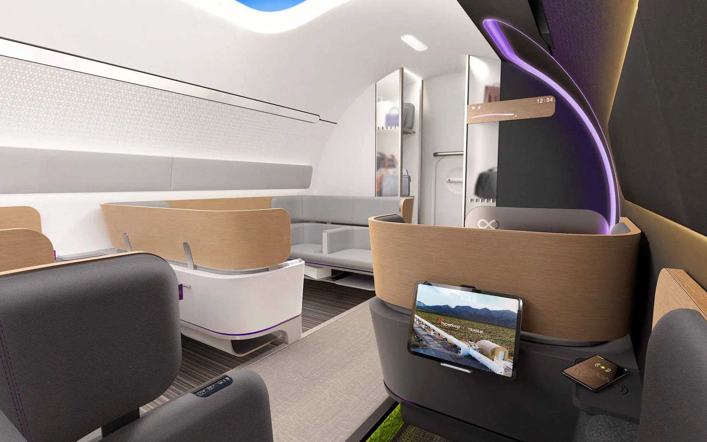
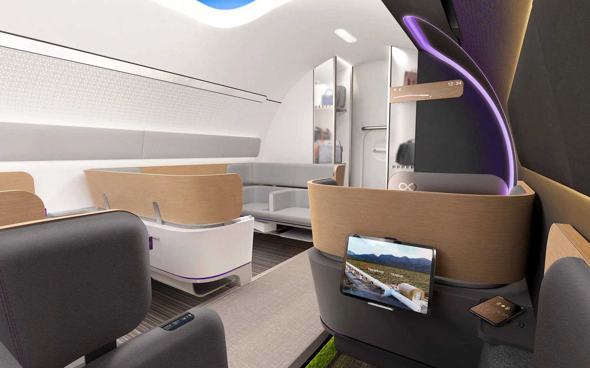

Hyperloop
Иновационната транспортна система на бъдещето, проектирана за свръхвисоки скорости и екологичност.
 

Преглед
Hyperloop е концепция за транспорт, при която се използват магнитно левитиращи капсули, движещи се в тръби с ниско налягане. Това ново поколение транспорт обещава скорост и ефективност, като същевременно минимизира въглеродните емисии.
Основни характеристики
- Скорост: Потенциална максимална скорост до 1,200 км/ч
- Енергийна ефективност: Системата използва възобновяеми енергийни източници
- Безопасност: Автономна система с минимален риск от злополуки
- Комфорт: Ниски вибрации и шум благодарение на магнитната левитация
Технология
Hyperloop използва технологии като магнитна левитация и тунели с ниско налягане за намаляване на въздушното съпротивление, което позволява на капсулите да се движат с много високи скорости. Тази технология обещава революция в транспорта и значително намаляване на времето за пътуване между градовете.
Услуги на борда
Пътниците могат да очакват комфортни, климатизирани купета с интегриран Wi-Fi, USB зарядни и просторни седалки. Услугите ще варират, за да отговарят на нуждите на модерните пътуващи.
Спецификации
| Скорост | До 1,200 км/ч |
|---|---|
| Дължина на капсулата | 15-20 метра |
| Капацитет | 20-40 пасажери на капсула |
| Оператор | Virgin Hyperloop |